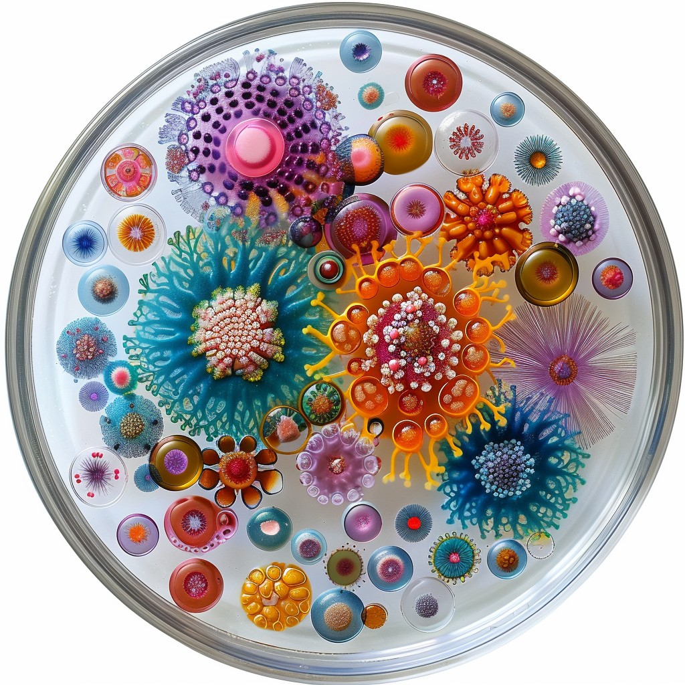

You're in your lab, and you have access to ten different species of bacteria. You’ve observed their behavior in a Petri dish before, and now it’s time to test whether your predictions match reality.Each species has a known strength, and when different species come into contact, only the strongest survives. Your task is to simulate this competitive environment and predict how the dish will look once the stronger bacteria have overpowered the weaker ones.
You are given a grid representing a Petri dish. Each cell can be:
#, which blocks movement and interaction.0 through 9.Each species has a unique power level (from 1 to 500). When two species are orthogonally adjacent (up, down, left, or right), the stronger one eventually spreads and takes over the weaker one’s cell.
Once no further changes occur (i.e., the dish stabilizes), your program should output the final configuration of the Petri dish.
n and m — the number of rows and columns of the grid (1 ≤ n, m ≤ 500).n lines each contain m characters: either # (barrier) or a digit 0 to 9 (indicating the species occupying that cell).0 to 9.
Print the final state of the Petri dish — n lines each with m characters — after the simulation has stabilized.
Print n lines each with m characters corresponding
to the final state of the Petri dish after the simulation has stabilized.
4 4 3982 597# 9190 7483 99 368 241 277 429 282 244 204 328 441
9999 999# 9999 9999
6 6 #4##41 #8###4 #098#6 62#4## ##85## #34#6# 286 102 464 166 52 430 32 363 118 143
#2##11 #2###1 #222#1 22#2## ##22## #22#6#
Estás no teu laboratório e tens ao teu dispor dez espécies diferentes de bactérias. Já observaste o comportamento destas espécies numa caixa de Petri, e agora chegou o momento de testar se as tuas previsões estão corretas.
Cada espécie tem uma força associada. Quando duas espécies diferentes entram em contacto, apenas a mais forte sobrevive. A tua tarefa é simular este ambiente competitivo e prever como ficará a caixa de Petri depois de as bactérias mais fortes dominarem as mais fracas.
É-te dado um grelha que representa a caixa de Petri. Cada célula pode conter:
#, que bloqueia movimento e interações.0 e 9, indicando a espécie presente nessa célula.Cada espécie tem um nível de força (de 1 a 500), e todas as forças são distintas. Quando duas espécies estão ortogonalmente adjacentes (isto é, acima, abaixo, à esquerda ou à direita), a espécie mais forte acabará por invadir a célula da mais fraca.
Quando já não for possível haver mais mudanças — ou seja, quando a caixa de Petri estabilizar — o teu programa deve imprimir o estado final da grelha.
n e m — o número de linhas e colunas da grelha (1 ≤ n, m ≤ 500).n linhas seguintes contêm exatamente m caracteres cada: ou # (barreira), ou um dígito de 0 a 9 (espécie de bactéria).0 a 9, por ordem.
Imprime o estado final da caixa de Petri — n linhas com m caracteres cada — após a estabilização da simulação.
4 4 3982 597# 9190 7483 99 368 241 277 429 282 244 204 328 441
9999 999# 9999 9999
6 6 #4##41 #8###4 #098#6 62#4## ##85## #34#6# 286 102 464 166 52 430 32 363 118 143
#2##11 #2###1 #222#1 22#2## ##22## #22#6#
Content by Fernando Silva and Vanessa Silva (DCC/FCUP), copied from the original website.